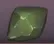

토끼 · 혼자 연습
돼지로 전환
소리 OFF
ROUND
1
송편
0
떡방아
◷
10.0
COMBO
0

쑥송편
일시정지
위의 순서대로 눌러주세요
혼자 하는 떡치기
토끼 떡치기
위에 나온 색을 순서대로 눌러
송편을 완성하세요.
패턴마다 10초 · 절구 6개
시간 초과 시 절구 1개 차감
패턴은 최대 8줄까지 늘어나요
시작하기
PC에서는 1 · 2 · 3 · 4 키로 입력